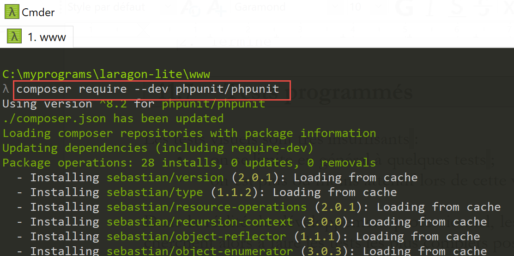
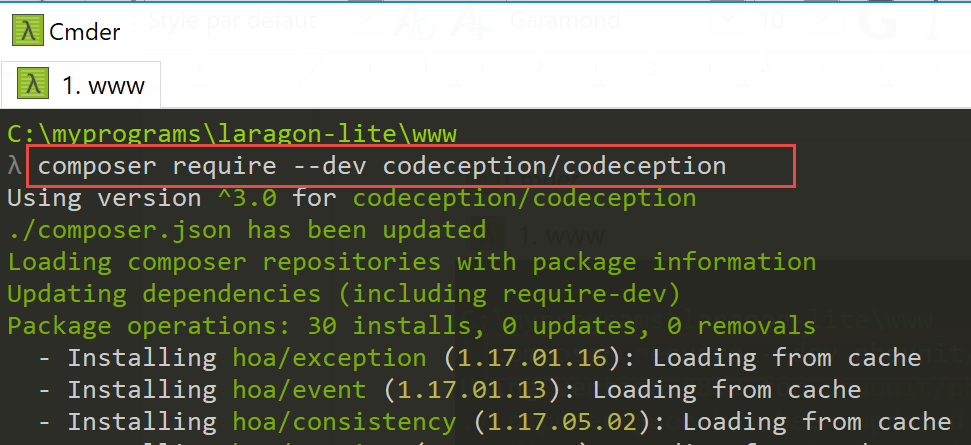
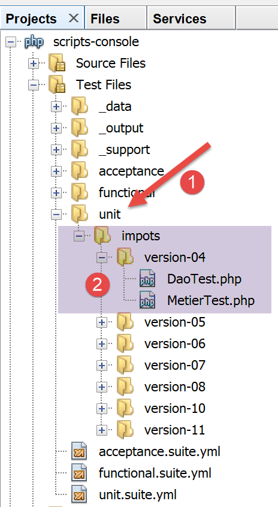

11. Ejercicio práctico – Versión 4
La aplicación de cálculo de impuestos implementará la siguiente arquitectura por capas:

Reutilizaremos los elementos de la versión 3 de la sección enlazada, modificándolos para adaptarlos a la nueva arquitectura de la aplicación. A esto se le denomina a veces «refactorización». En este caso, suponemos que los datos que necesita la aplicación se almacenan en archivos de texto. La capa [Dao] se encargará de las interacciones con estos archivos.
11.1. Árbol de scripts

11.2. Objetos intercambiados entre capas
Conservaremos ciertos objetos de la versión 3. Los enumeramos aquí a modo de recordatorio.
La excepción [ExceptionImpots] es la excepción que lanzará la capa [Dao] cuando encuentre un problema, ya sea con el acceso a los datos o con la naturaleza de los mismos (datos incorrectos).
<?php
// namespace
namespace Application;
class ExceptionImpots extends \RuntimeException {
public function __construct(string $message, int $code=0) {
parent::__construct($message, $code);
}
}
La clase [Utilities] contiene métodos útiles para gestionar archivos de texto (en este caso, un único método):
<?php
// namespace
namespace Application;
// a class of utility functions
abstract class Utilitaires {
public static function cutNewLinechar(string $ligne): string {
// delete the end-of-line mark from $ligne if it exists
$longueur = strlen($ligne); // line length
while (substr($ligne, $longueur - 1, 1) == "\n" or substr($ligne, $longueur - 1, 1) == "\r") {
$ligne = substr($ligne, 0, $longueur - 1);
$longueur--;
}
// end - return the line
return($ligne);
}
}
La clase [TaxAdminData] es la clase que encapsula los datos de administración tributaria:
<?php
namespace Application;
class TaxAdminData {
// tax brackets
private $limites;
private $coeffR;
private $coeffN;
// tax calculation constants
private $plafondQfDemiPart;
private $plafondRevenusCelibatairePourReduction;
private $plafondRevenusCouplePourReduction;
private $valeurReducDemiPart;
private $plafondDecoteCelibataire;
private $plafondDecoteCouple;
private $plafondImpotCouplePourDecote;
private $plafondImpotCelibatairePourDecote;
private $abattementDixPourcentMax;
private $abattementDixPourcentMin;
// initialization
public function setFromJsonFile(string $taxAdminDataFilename): TaxAdminData {
// retrieve the contents of the tax data file
$fileContents = \file_get_contents($taxAdminDataFilename);
…
// we return the object
return $this;
}
private function check($value): \stdClass {
…
return $result;
}
// toString
public function __toString() {
// object's Json string
return \json_encode(\get_object_vars($this), JSON_UNESCAPED_UNICODE);
}
// getters and setters
public function getLimites() {
return $this->limites;
}
…
public function setLimites($limites) {
$this->limites = $limites;
return $this;
}
…
}
Añadimos una nueva clase [TaxPayerData] que encapsula los datos escritos en el archivo de resultados:
<?php
// namespace
namespace Application;
// data class
class TaxPayerData {
// data required to calculate the taxpayer's tax liability
private $marié;
private $enfants;
private $salaire;
// tax calculation results
private $montant;
private $surcôte;
private $décôte;
private $réduction;
private $taux;
// setter
public function setFromParameters(string $marié, int $nbEnfants, int $salaireAnnuel) : TaxPayerData{
// taxpayer data required for tax calculation
$this->marié = $marié;
$this->enfants = $nbEnfants;
$this->salaire = $salaireAnnuel;
// initialize the object
return $this;
}
// getters and setters
public function getMarié() {
return $this->marié;
}
…
public function setMarié($marié) {
$this->marié = $marié;
return $this;
}
…
// toString
public function __toString() {
// object's Json string
return \json_encode(\get_object_vars($this), JSON_UNESCAPED_UNICODE);
}
}
Nota: Utiliza la generación automática de código para generar el constructor, los getter y los setter (consulta la sección enlazada). Ten en cuenta que los setter son «fluidos».
11.3. La capa [DAO]
Aquí nos centramos en la capa [1] de nuestra aplicación:

11.3.1. La interfaz [InterfaceDao]
La interfaz para la capa [DAO] será la siguiente [InterfaceDao.php]:
<?php
// namespace
namespace Application;
interface InterfaceDao {
// reading taxpayer data
public function getTaxPayersData(string $taxPayersFilename, string $errorsFilename): array;
// reading tax data (tax brackets)
public function getTaxAdminData(): TaxAdminData;
// recording results
public function saveResults(string $resultsFilename, array $taxPayersData): void;
}
Comentarios
- Los requisitos son los siguientes:
- Los datos del contribuyente se almacenan en un archivo de texto;
- los resultados del cálculo de impuestos se guardan en un archivo de texto;
- Cualquier error se guarda en un archivo de texto;
- se desconoce en qué formato están disponibles los datos de la autoridad fiscal. Para cada nuevo formato, la interfaz [InterfaceDao] debe ser implementada por una nueva clase;
- los métodos de la interfaz que encuentren un error fatal al acceder a los datos deben lanzar una excepción de tipo [TaxException];
- línea 9: el método que recupera los datos del contribuyente [estado civil, número de hijos, salario anual];
- el primer parámetro es el nombre del archivo de texto que contiene estos datos;
- el segundo parámetro es el nombre del archivo de texto en el que se registrarán los errores encontrados;
- línea 12: el método que recupera datos de la autoridad fiscal. Aquí no se pasan parámetros porque no sabemos cómo se almacenan los datos;
- línea 15: el método utilizado para guardar los resultados del cálculo de impuestos en un archivo de texto, cuyo nombre se pasa como parámetro;
Al escribir la interfaz [InterfaceDao], sabemos que habrá diferentes formas de implementar el método [getTaxAdminData] dependiendo de cómo se almacenen los datos de la administración tributaria. Por lo tanto, la interfaz [InterfaceDao] será implementada por diferentes clases, cada una de las cuales gestionará un método de almacenamiento específico para estos datos (matrices, archivos de texto, bases de datos, servicios web). No obstante, estas clases derivadas compartirán código común, concretamente la implementación de los métodos [getTaxPayersData] y [saveResults]. Sabemos que este caso de uso puede implementarse de dos maneras (véase el párrafo enlazado):
- Creamos una clase abstracta C que contiene el código común a las clases derivadas. La clase C implementa la interfaz I, pero ciertos métodos que deben declararse en las clases derivadas se declaran como abstractos en la clase C y, por lo tanto, la propia clase C es abstracta. A continuación, creamos las clases C1 y C2 derivadas de C, cada una de las cuales implementa a su manera los métodos no definidos (abstractos) de su clase padre C;
- creamos un rasgo T que es casi idéntico a la clase abstracta C de la solución anterior. Este rasgo no implementa la interfaz I porque, sintácticamente, no puede hacerlo. A continuación, creamos las clases C1 y C2 que implementan la interfaz I y utilizan el rasgo T. Lo único que queda por hacer para estas clases es implementar los métodos de la interfaz I que no están implementados por el rasgo T que importan;
Para este ejemplo, utilizaremos aquí un rasgo [TraitDao].
11.3.2. El rasgo [TraitDao]
El código del rasgo [TraitDao] es el siguiente [TraitDao.php]:
<?php
// namespace
namespace Application;
trait TraitDao {
// reading taxpayer data
public function getTaxPayersData(string $taxPayersFilename, string $errorsFilename): array {
// taxpayer data table
$taxPayersData = [];
// error table
$errors = [];
// many errors can occur when managing files
try {
// reading user data
// each line has the form marital status, number of children, annual salary
$taxPayersFile = fopen($taxPayersFilename, "r");
if (!$taxPayersFile) {
throw new ExceptionImpots("Impossible d'ouvrir en lecture les déclarations des contribuables [$taxPayersFilename]", 12);
}
// the current line of the user data file is used
// in the form of marital status, number of children, annual salary
$num = 1; // n° current line
$nbErreurs = 0; // number of errors encountered
while ($ligne = fgets($taxPayersFile, 100)) {
// empty lines are neglected
$ligne = trim($ligne);
if (strlen($ligne) == 0) {
// next line
$num++;
// we loop again
continue;
}
// remove any end-of-line marker
$ligne = Utilitaires::cutNewLineChar($ligne);
// we retrieve the 3 fields married:children:salary which form $ligne
list($marié, $enfants, $salaire) = explode(",", $ligne);
// we check them
// marital status must be yes or no
$marié = trim(strtolower($marié));
$erreur = ($marié !== "oui" and $marié !== "non");
if (!$erreur) {
// the number of children must be an integer
$enfants = trim($enfants);
if (!preg_match("/^\d+$/", $enfants)) {
$erreur = TRUE;
} else {
$enfants = (int) $enfants;
}
}
if (!$erreur) {
// the salary is a whole number without the euro cents
$salaire = trim($salaire);
if (!preg_match("/^\d+$/", $salaire)) {
$erreur = TRUE;
} else {
$salaire = (int) $salaire;
}
}
// mistake?
if ($erreur) {
$errors[] = "la ligne [$num] du fichier [$taxPayersFilename] est erronée";
$nbErreurs++;
} else {
// memorize information
$taxPayersData[] = (new TaxPayerData())->setFromParameters($marié, $enfants, $salaire);
}
// next line
$num++;
}
// are we at the end of the file?
if (!feof($taxPayersFile)) {
// we're out of the loop on a read error
throw new ExceptionImpots("Erreur lors de la lecture de la ligne n° [$num] du fichier [$taxPayersFilename]");
} else {
// we're out of the loop at the end-of-file mark
// save errors in a text file
$this->saveString($errorsFilename, implode("\n", $errors));
// function result
return $taxPayersData;
}
} finally {
// close the file if it is open
if ($taxPayersFile) {
fclose($taxPayersFile);
}
}
}
// recording results
public function saveResults(string $resultsFilename, array $taxPayersData): void {
// save table [$taxPayersData] in text file [$resultsFileName]
// if text file [$resultsFileName] does not exist, it is created
$this->saveString($resultsFilename, implode("\n", $taxPayersData));
}
// saving table results in a text file
private function saveString(string $fileName, string $data): void {
// save table [$data] in text file [$fileName]
// if text file [$fileName] does not exist, it is created
if (file_put_contents($fileName, $data) === FALSE) {
throw new ExceptionImpots("Erreur lors de l'enregistrement de données dans le fichier texte [$fileName]");
}
}
}
Comentarios
- línea 6: aquí definimos un rasgo, no una clase;
- líneas 9–89: El método [getTaxPayersData] implementa el método del mismo nombre de la interfaz [InterfaceDao]. Recupera datos de los contribuyentes [estado civil, número de hijos, salario anual ] de un archivo de texto llamado [$taxPayersFilename]. Devuelve estos datos como una matriz [$taxPayersData] de elementos de tipo [TaxPayerData] (líneas 67, 81);
- el método [getTaxPayersData] es muy similar al método [AbstractBaseImpots::executeBatchImpots] descrito en la sección enlazada, con las siguientes diferencias:
- el método [getTaxPayersData] solo recupera datos de contribuyentes. No realiza ningún cálculo fiscal. Aquí, esa es la función de la capa [business];
- Al igual que el método [executeBatchImpots], informa de los errores. En este caso, los errores se almacenan primero en una matriz [$errors] (línea 13), que luego se guarda en un archivo de texto al final del proceso (línea 79). Dependiendo de la situación, esta matriz puede estar vacía o no;
- en caso de un error fatal, se lanza una excepción [ExceptionImpots] (líneas 20, 75);
- línea 73: fíjate en el procesamiento que se realiza al salir del bucle de las líneas 26–71. De hecho, la función [fgets] tiene el inconveniente de devolver el valor booleano FALSE tanto cuando la lectura de líneas encuentra el marcador de fin de archivo como cuando la lectura falla debido a un error. Para distinguir entre los dos casos, comprobamos si hemos llegado al final del archivo utilizando la función [feof]. Si no hemos llegado al final del archivo, significa que se ha producido un error, y entonces lanzamos una excepción;
- líneas 83–88: el bloque [finally] se ejecuta independientemente de si se ha producido una excepción durante el procesamiento del archivo;
- línea 85: si se ha abierto el archivo, entonces el «handle» del archivo [$taxPayersFile] tiene el valor booleano TRUE; de lo contrario, es FALSE;
- líneas 99–105: el método privado [saveString] utilizado en la línea 79 para guardar la matriz de errores en un archivo de texto;
- línea 99: el método [saveString] toma dos parámetros:
- [string $filename], que es el nombre del archivo de texto utilizado para guardar los datos;
- [string $data], que es la cadena que se va a guardar en el archivo de texto. Esta cadena será una secuencia de líneas terminadas por el carácter de nueva línea \n;
- línea 102: la función PHP [file_puts_contents] escribe una cadena en un archivo de texto. Abre el archivo, escribe la cadena en él y cierra el archivo. Devuelve FALSE si se produce un error;
- línea 103: si se produce un error, se lanza una excepción;
- líneas 92-96: implementación del método [saveResults] de la interfaz [InterfaceDao]. Se vuelve a utilizar el método privado [saveString]. En este caso, el segundo parámetro de [saveString] es una cadena construida a partir de la matriz [$taxPayersData], cuyos elementos son de tipo [TaxPayerData]. Cabe preguntarse cuál será el resultado de la operación:
implode("\n", $taxPayersData)
Hemos definido el siguiente método [__toString] en la clase [TaxPayerData] (véase la sección enlazada):
public function __toString() {
// chaîne Json de l'objet
return \json_encode(\get_object_vars($this), JSON_UNESCAPED_UNICODE);
}
La operación
implode("\n", $taxPayersData)
concatenará cada elemento de la matriz [$taxPayersData] —convertido en una cadena mediante su método [__toString]— con el carácter de nueva línea \n. Esto dará como resultado una cadena con el siguiente formato:
json1\njson2\n…
Conclusión
El rasgo [TraitDao] ha implementado dos de los métodos de la interfaz [InterfaceDao], [getTaxPayersData] y [saveResults]:
<?php
// namespace
namespace Application;
interface InterfaceDao {
// reading taxpayer data
public function getTaxPayersData(string $taxPayersFilename, string $errorsFilename): array;
// reading tax data (tax brackets)
public function getTaxAdminData(): TaxAdminData;
// recording results
public function saveResults(string $resultsFilename, array $taxPayersData): void;
}
Todavía tenemos que implementar el método [getTaxAdminData], que recupera datos de la administración tributaria.
11.3.3. La clase [ImpotsWithTaxAdminDataInJsonFile]
La clase [ImpotsWithTaxAdminDataInJsonFile] implementa la interfaz [InterfaceDao] de la siguiente manera:
<?php
// namespace
namespace Application;
// definition of a ImpotsWithDataInFile class
class DaoImpotsWithTaxAdminDataInJsonFile implements InterfaceDao {
// use of a line
use TraitDao;
// the TaxAdminData object containing tax bracket data
private $taxAdminData;
// the manufacturer
public function __construct(string $taxAdminDataFilename) {
// we want to initialize the [$this->taxAdminData] attribute
$this->taxAdminData = (new TaxAdminData())->setFromJsonFile($taxAdminDataFilename);
}
// returns data for tax calculation
public function getTaxAdminData(): TaxAdminData {
return $this->taxAdminData;
}
}
Comentarios
- línea 7: la clase [ImpotsWithTaxAdminDataInJsonFile] implementa la interfaz [InterfaceDao];
- línea 9: la clase [ImpotsWithTaxAdminDataInJsonFile] utiliza el rasgo [traitDao], que, como sabemos, implementa los métodos [getTaxPayersData] y [saveResults] de la interfaz [InterfaceDao]. Por lo tanto, solo queda que la clase [ImpotsWithTaxAdminDataInJsonFile] implemente el método [getTaxAdminData], que recupera datos de la administración tributaria;
- Línea 11: el atributo de tipo [TaxAdminData] devuelto por el método [getTaxAdminData] en las líneas 20-22. Este atributo es inicializado por el constructor en las líneas 14-17;
Ya hemos terminado con la capa [DAO] de nuestra aplicación: tenemos una clase que implementa completamente la interfaz [InterfaceDao] que definimos. Ahora podemos pasar a la capa [business].
11.4. La capa [business]
Ahora vamos a implementar la capa [2] de nuestra arquitectura:

11.4.1. La interfaz [InterfaceMétier]
La interfaz para la capa [de negocio] será la siguiente:
<?php
// namespace
namespace Application;
interface InterfaceMetier {
// calculating a taxpayer's taxes
public function calculerImpot(string $marié, int $enfants, int $salaire): array;
// batch mode tax calculation
public function executeBatchImpots(string $taxPayersFileName, string $resultsFileName, string $errorsFileName): void;
}
Comentarios
- línea 9: la interfaz [BusinessInterface] puede calcular el importe de los impuestos de un contribuyente individual siempre que se le facilite la siguiente información: estado civil, número de hijos y salario anual. El método [calculateTax] no utiliza la capa [DAO], por lo que no lanza excepciones;
- Línea 9: La interfaz [BusinessInterface] también puede calcular el importe de los impuestos para un grupo de contribuyentes cuyos datos se recogen en el archivo de texto denominado [$taxPayersFileName]. Escribe los resultados en un archivo de texto denominado [$resultsFileName]. El método [executeBatchImpots] debe comunicarse con la capa [dao], que gestiona el acceso al sistema de archivos. Las excepciones pueden propagarse desde la capa [dao], y el método [executeBatchImpots] no las capturará: permitirá que se propaguen al script principal. Los errores no fatales se registran en el archivo de texto denominado [$errorsFileName];
- línea 9: el método [calculateTax] es un método puramente [business]. No se ocupa del origen de los datos que utiliza;
- línea 12: el método [executeBatchImpots] interactuará con la capa [dao] para leer y escribir datos en archivos de texto. Llamará repetidamente al método de negocio [calculerImpot];
11.4.2. La clase [Business]
La clase [Metier] implementa la interfaz [InterfaceMetier] de la siguiente manera:
<?php
// namespace
namespace Application;
class Metier implements InterfaceMetier {
// dao layer
private $dao;
// tax administration data
private $taxAdminData;
//---------------------------------------------
// setter couche [dao]
public function setDao(InterfaceDao $dao) {
$this->dao = $dao;
return $this;
}
public function __construct(InterfaceDao $dao) {
// a reference is stored on the [dao] layer
$this->dao = $dao;
// recover data for tax calculation
// method [getTaxAdminData] may throw a ExceptionImpots exception
// we then let it go back to the calling code
$this->taxAdminData = $this->dao->getTaxAdminData();
}
// tAX CALCULATION
// --------------------------------------------------------------------------
public function calculerImpot(string $marié, int $enfants, int $salaire): array {
…
// result
return ["impôt" => floor($impot), "surcôte" => $surcôte, "décôte" => $décôte, "réduction" => $réduction, "taux" => $taux];
}
// --------------------------------------------------------------------------
private function calculerImpot2(string $marié, int $enfants, float $salaire): array {
…
// result
return ["impôt" => $impôt, "surcôte" => $surcôte, "taux" => $coeffR[$i]];
}
// revenuImposable=annualwage-discount
// the allowance has a minimum and a maximum
private function getRevenuImposable(float $salaire): float {
…
// result
return floor($revenuImposable);
}
// calculates any discount
private function getDecôte(string $marié, float $salaire, float $impots): float {
…
// result
return ceil($décôte);
}
// calculates any reduction
private function getRéduction(string $marié, float $salaire, int $enfants, float $impots): float {
…
// result
return ceil($réduction);
}
// batch mode tax calculation
public function executeBatchImpots(string $taxPayersFileName, string $resultsFileName, string $errorsFileName): void {
…
// recording results
$this->dao->saveResults($resultsFileName, $results);
}
}
Comentarios
- línea 6: la clase [Business] implementa la interfaz [BusinessInterface], es decir, los métodos [calculateTax] (líneas 30-34) y [executeBatchTaxes] (líneas 66-70);
- línea 8: una referencia a la capa [dao]. Esto es necesario para que la capa [business] sepa dónde buscar cuando necesite datos externos. Este atributo se inicializará mediante el setter de las líneas 14-17 o mediante el constructor de las líneas 19-26;
- línea 10: el objeto de tipo [TaxAdminData] que encapsula los datos de administración tributaria. Estos datos son necesarios para el método de negocio [calculateTax]. Este atributo se inicializa mediante el constructor en las líneas 19-26;
- líneas 19-26: el constructor inicializa los dos atributos de la clase:
- el atributo [$dao] se inicializa con la referencia pasada como parámetro al constructor. Tenga en cuenta que el tipo de este parámetro es el de la interfaz [InterfaceDao], lo que permite que la clase [Metier] sea inicializada por cualquier clase que implemente esta interfaz;
- el atributo [$taxAdminData] se inicializa llamando al método [getTaxAdminData] de la capa [dao];
Concluimos que, cuando se ejecutan los métodos [calculateTaxes] y [executeBatchTaxes], se inicializan ambos atributos [$dao] y [$taxAdminData].
El método [calculateTaxes] es el siguiente:
public function calculerImpot(string $marié, int $enfants, int $salaire): array {
// $marié : oui, non
// $enfants : nombre d'enfants
// $salaire : salaire annuel
// $this->taxAdminData : données de l'administration fiscale
//
// on vérifie qu'on a bien les données de l'administration fiscale
if ($this->taxAdminData === NULL) {
$this->taxAdminData = $this->getTaxAdminData();
}
// calcul de l'impôt avec enfants
$result1 = $this->calculerImpot2($marié, $enfants, $salaire);
$impot1 = $result1["impôt"];
// calcul de l'impôt sans les enfants
if ($enfants != 0) {
$result2 = $this->calculerImpot2($marié, 0, $salaire);
$impot2 = $result2["impôt"];
// application du plafonnement du quotient familial
$plafonDemiPart = $this->taxAdminData->getPlafondQfDemiPart();
if ($enfants < 3) {
// $PLAFOND_QF_DEMI_PART euros pour les 2 premiers enfants
$impot2 = $impot2 - $enfants * $plafonDemiPart;
} else {
// $PLAFOND_QF_DEMI_PART euros pour les 2 premiers enfants, le double pour les suivants
$impot2 = $impot2 - 2 * $plafonDemiPart - ($enfants - 2) * 2 * $plafonDemiPart;
}
} else {
$impot2 = $impot1;
$result2 = $result1;
}
// on prend l'impôt le plus fort
if ($impot1 > $impot2) {
$impot = $impot1;
$taux = $result1["taux"];
$surcôte = $result1["surcôte"];
} else {
$surcôte = $impot2 - $impot1 + $result2["surcôte"];
$impot = $impot2;
$taux = $result2["taux"];
}
// calcul d'une éventuelle décôte
$décôte = $this->getDecôte($marié, $salaire, $impot);
$impot -= $décôte;
// calcul d'une éventuelle réduction d'impôts
$réduction = $this->getRéduction($marié, $salaire, $enfants, $impot);
$impot -= $réduction;
// résultat
return ["impôt" => floor($impot), "surcôte" => $surcôte, "décôte" => $décôte, "réduction" => $réduction, "taux" => $taux];
}
Comentarios
- Este código procede del método [AbstractBaseImpots::calculateTax] de la versión 3, tal y como se explica en la sección enlazada. Lo mismo se aplica a los métodos privados [calculateTax2, getDiscount, getReduction, getTaxableIncome];
El método [Metier::executeBatchImpots] es el siguiente:
public function executeBatchImpots(string $taxPayersFileName, string $resultsFileName, string $errorsFileName): void {
// we let the exceptions coming from the [dao] layer flow upwards
// retrieve taxpayer data
$taxPayersData = $this->dao->getTaxPayersData($taxPayersFileName, $errorsFileName);
// results table
$results = [];
// we exploit them
foreach ($taxPayersData as $taxPayerData) {
// tax calculation
$result = $this->calculerImpot(
$taxPayerData->getMarié(),
$taxPayerData->getEnfants(),
$taxPayerData->getSalaire());
// complete [$taxPayerData]
$taxPayerData->setMontant($result["impôt"]);
$taxPayerData->setDécôte($result["décôte"]);
$taxPayerData->setSurCôte($result["surcôte"]);
$taxPayerData->setTaux($result["taux"]);
$taxPayerData->setRéduction($result["réduction"]);
// put the result in the results table
$results [] = $taxPayerData;
}
// recording results
$this->dao->saveResults($resultsFileName, $results);
}
Comentarios
- línea 1: el método debe llamar repetidamente al método [calculateTax] para cada contribuyente que se encuentre en el archivo de texto denominado [$taxPayersFileName]. Debe escribir los resultados en el archivo de texto denominado [$resultsFileName]. Los errores no fatales que se produzcan se registran en el archivo de texto denominado [$errorsFileName]. El método no lanza excepciones por sí mismo, pero permite que se propaguen las lanzadas por la capa [dao];
- Línea 4: se solicitan los datos de los contribuyentes a la capa [dao]. Esto devuelve una matriz de elementos de tipo [TaxPayerData], que es una clase de atributos [married, numberOfChildren, salary, amount, deduction, reduction, surcharge, rate] (véase el párrafo enlazado). Si se produce una excepción aquí, dado que no es capturada por un bloque catch, se propagará automáticamente de vuelta al código de llamada. Esto significa que, en caso de excepción, no se ejecuta la línea 6;
- línea 6: la matriz de resultados de tipo [TaxPayerData];
- líneas 8-22: se calcula el impuesto para cada elemento de la matriz de contribuyentes [$taxPayersData]. Para ello, se llama al método interno [calculateTax] (línea 10);
- líneas 15-19: el resultado se utiliza para inicializar los atributos de [TaxPayerData] que aún no se habían inicializado;
- línea 21: el resultado se añade a la matriz de resultados [$results];
- línea 24: una vez calculado el impuesto para todos los contribuyentes, los resultados se guardan en un archivo de texto. La capa [dao] se encarga de esta tarea;
Conclusión
En general, la capa [business] es bastante sencilla de escribir porque interactúa con la capa [DAO], que gestiona el acceso a los datos junto con el manejo de errores asociado.
11.5. El script principal
Ahora escribiremos el script para la capa [3] de nuestra arquitectura:

El script principal es el siguiente [main.php]:
<?php
// strict adherence to declared types of function parameters
declare (strict_types=1);
// namespace
namespace Application;
// error handling by PHP
//ini_set("display_errors", "0");
// interface and class inclusion
require_once __DIR__ . "/TaxAdminData.php";
require_once __DIR__ . "/TaxPayerData.php";
require_once __DIR__ . "/ExceptionImpots.php";
require_once __DIR__ . "/Utilitaires.php";
require_once __DIR__ . "/InterfaceDao.php";
require_once __DIR__ . "/TraitDao.php";
require_once __DIR__ . "/DaoImpotsWithTaxAdminDataInJsonFile.php";
require_once __DIR__ . "/InterfaceMetier.php";
require_once __DIR__ . "/Metier.php";
// test -----------------------------------------------------
// definition of constants
const TAXPAYERSDATA_FILENAME = "taxpayersdata.txt";
const RESULTS_FILENAME = "resultats.txt";
const ERRORS_FILENAME = "errors.txt";
const TAXADMINDATA_FILENAME = "taxadmindata.json";
try {
// creation of the [dao] layer
$dao = new DaoImpotsWithTaxAdminDataInJsonFile(TAXADMINDATA_FILENAME);
// creation of the [business] layer
$métier = new Metier($dao);
// tax calculation in batch mode
$métier->executeBatchImpots(TAXPAYERSDATA_FILENAME, RESULTS_FILENAME, ERRORS_FILENAME);
} catch (ExceptionImpots $ex) {
// error is displayed
print $ex->getMessage() . "\n";
}
// end
print "Terminé\n";
exit;
Comentarios
- Línea 24: el nombre del archivo de datos del contribuyente;
- línea 25: el nombre del archivo de resultados;
- línea 26: el nombre del archivo de errores;
- línea 27: el nombre del archivo JSON que contiene los datos de la autoridad fiscal;
- línea 31: creación de la capa [dao];
- línea 33: creación de la capa [business] basada en esta capa [dao];
- línea 35: ejecución del método [executeBatchImpots] de la capa [business];
- líneas 36-39: vimos que la capa [business] podía lanzar excepciones. Aquí se capturan;
11.6. Pruebas visuales
11.6.1. Prueba n.º 1
Con el siguiente archivo de contribuyentes [taxpayersdata.txt]:
oui,2,55555
oui,2,50000
oui,3,50000
non,2,100000
non,3x,100000
oui,3,100000
oui,5,100000x
non,0,100000
oui,2,30000
non,0,200000
oui,3,200000
Obtenemos el siguiente archivo de errores [errors.txt]:
la ligne [5] du fichier [taxpayersdata.txt] est erronée
la ligne [7] du fichier [taxpayersdata.txt] est erronée
y el siguiente archivo de resultados [resultats.txt]:
11.6.2. Prueba n.º 2
En el script principal, asignamos un nombre de archivo que no existe al archivo del contribuyente:
Los resultados que se muestran en la consola son los siguientes:
Warning: fopen(taxpayersdata2.txt): failed to open stream: No such file or directory in C:\Data\st-2019\dev\php7\poly\scripts-console\impots\version-04\TraitDao.php on line 18
Impossible d'ouvrir en lecture les déclarations des contribuables [taxpayersdata2.txt]
Terminé
Done.
- línea 1: advertencias del intérprete de PHP;
- línea 2: mensaje de error de la excepción lanzada por la capa [dao];
Es posible suprimir los mensajes de error del intérprete de PHP:

La línea 21 del código anterior indica al sistema que no muestre los errores de PHP. Durante la fase de desarrollo, es necesario que se muestren. En modo de producción, deben ocultarse.
Los resultados de la ejecución son entonces los siguientes:
Impossible d'ouvrir en lecture les déclarations des contribuables [taxpayersdata2.txt]
Terminé
11.7. Pruebas [Codeception]
Las pruebas visuales son muy insuficientes:
- por lo general nos limitamos a unas pocas pruebas;
- puede que no prestemos suficiente atención durante esta inspección visual y se nos pasen por alto algunos detalles;
En el mundo real del desarrollo profesional, las pruebas las redactan personas dedicadas a ello, para quienes esta es su función principal. Se esfuerzan por hacer que las pruebas sean lo más exhaustivas posible. Para ello, utilizan marcos de pruebas.
Aquí utilizaremos el marco Codeception [https://codeception.com/] porque se puede integrar en NetBeans. Es un marco con una amplia gama de capacidades. Solo utilizaremos algunas de ellas. La idea es disponer de una forma rápida, tras cada nueva versión del ejercicio de la aplicación, de verificar que funciona. La existencia de pruebas superadas da al desarrollador confianza en el código que ha escrito. Este es un factor importante.
11.7.1. Instalación del marco [Codeception]
Al igual que muchas bibliotecas PHP, el marco [Codeception] se instala mediante [Composer]. Así que abrimos un terminal de Laragon (véase el enlace en el párrafo).
En primer lugar, debemos instalar el marco de pruebas PHPUnit [https://phpunit.de/]. Esto se debe a que Codeception utiliza el marco PHPUnit en segundo plano:

A continuación, instalamos el marco Codeception:

Eso es todo. Ahora veamos cómo integrar [Codeception] en NetBeans.
11.7.2. Integración de [Codeception] en NetBeans

- En [1-2], acceda a las propiedades del proyecto;
- En [3-4], establecimos [Codeception] como uno de los marcos de pruebas del proyecto;


- En [5-8], inicialice el marco [Codeception] para el proyecto;

- En [9], se ha creado una carpeta [tests], junto con un archivo de configuración [codeception.yml] en [10-11]. El archivo [11] es igual que el archivo [10]. Codeception simplemente ha creado una carpeta [Important Files] para dar al archivo [10] una designación especial;
- en [12-13], volvemos a las propiedades del proyecto;

- en [14-16], la carpeta [tests] [16] se designa como la carpeta de pruebas del proyecto;
- en [16], la carpeta [tests] aparece entonces con el nuevo nombre [Test Files]. La presencia de esta carpeta en un proyecto PHP indica que el proyecto incorpora un marco de pruebas unitarias;
- crearemos nuestras pruebas en la carpeta [unit] [17];
11.7.3. Pruebas para la capa [dao]

- Crearemos todas nuestras pruebas en la carpeta [unit] [1];
- Los nombres de las clases de prueba de [Codeception] deben terminar con la palabra clave [Test]; de lo contrario, las clases no se reconocerán como clases de prueba;
Nuestras clases de prueba [Codeception] tendrán el siguiente formato [https://codeception.com/docs/05-UnitTests]:
<?php
// strict adherence to declared types of function parameters
declare (strict_types=1);
// namespace
namespace Application;
// loading the test environment
…
class DaoTest extends \Codeception\Test\Unit {
// test attributes
private $attribut1;
public function __construct() {
parent::__construct();
// test environment initialization
…
}
// tests
public function testTaxAdminData() {
// tests
$this->assertEquals($expected, $actual);
$this->assertEqualsWithDelta($expected, $actual, $delta);
$this->assertTrue($actual);
$this->assertFalse($actual);
$this->assertNull($actual);
$this->assertEmpty($actual);
$this→assertSame($expected, $actual);
…
}
}
Comentarios
- línea 7: las clases de prueba estarán en el mismo espacio de nombres que la aplicación sometida a prueba;
- líneas 9-10: aquí están las instrucciones [require] para cargar las clases e interfaces sometidas a prueba;
- línea 12: el nombre de la clase de prueba debe terminar con la palabra clave [Test]. Esta clase debe extender la clase [\Codeception\Test\Unit];
- líneas 16-20: el constructor nos permite inicializar el entorno de prueba;
- línea 23: los nombres de los métodos de prueba deben comenzar con la palabra clave [test];
- líneas 25–31: se pueden utilizar varios métodos de prueba;
La clase de prueba [DaoTest] tendrá el siguiente aspecto:
<?php
// strict adherence to declared types of function parameters
declare (strict_types=1);
// namespace
namespace Application;
// constants
define("ROOT", "C:/Data/st-2019/dev/php7/poly/scripts-console/impots/version-04");
define("VENDOR", "C:/myprograms/laragon-lite/www/vendor");
// interface and class inclusion
require_once ROOT . "/TaxAdminData.php";
require_once ROOT . "/TaxPayerData.php";
require_once ROOT . "/ExceptionImpots.php";
require_once ROOT . "/Utilitaires.php";
require_once ROOT . "/InterfaceDao.php";
require_once ROOT . "/TraitDao.php";
require_once ROOT . "/DaoImpotsWithTaxAdminDataInJsonFile.php";
require_once ROOT . "/InterfaceMetier.php";
require_once ROOT . "/Metier.php";
require_once VENDOR. "/autoload.php";;
// test -----------------------------------------------------
// definition of constants
const TAXADMINDATA_FILENAME = "taxadmindata.json";
class DaoTest extends \Codeception\Test\Unit {
// TaxAdminData
private $taxAdminData;
public function __construct() {
parent::__construct();
// creation of the [dao] layer
$dao = new DaoImpotsWithTaxAdminDataInJsonFile(ROOT . "/" . TAXADMINDATA_FILENAME);
$this->taxAdminData = $dao->getTaxAdminData();
}
// tests
public function testTaxAdminData() {
…
}
}
Comentarios
Para crear las pruebas de una versión del ejercicio de la aplicación, utilizaremos un entorno idéntico al que utiliza el script principal de la versión. Para la versión 04, se trata del siguiente script [main.php]:
<?php
// strict adherence to declared types of function parameters
declare (strict_types=1);
// namespace
namespace Application;
// error handling by PHP
ini_set("display_errors", "0");
// interface and class inclusion
require_once __DIR__ . "/TaxAdminData.php";
require_once __DIR__ . "/TaxPayerData.php";
require_once __DIR__ . "/ExceptionImpots.php";
require_once __DIR__ . "/Utilitaires.php";
require_once __DIR__ . "/InterfaceDao.php";
require_once __DIR__ . "/TraitDao.php";
require_once __DIR__ . "/DaoImpotsWithTaxAdminDataInJsonFile.php";
require_once __DIR__ . "/InterfaceMetier.php";
require_once __DIR__ . "/Metier.php";
// test -----------------------------------------------------
// definition of constants
const TAXPAYERSDATA_FILENAME = "taxpayersdata.txt";
const RESULTS_FILENAME = "resultats.txt";
const ERRORS_FILENAME = "errors.txt";
const TAXADMINDATA_FILENAME = "taxadmindata.json";
try {
// creation of the [dao] layer
$dao = new DaoImpotsWithTaxAdminDataInJsonFile(TAXADMINDATA_FILENAME);
// creation of the [business] layer
$métier = new Metier($dao);
// tax calculation in batch mode
$métier->executeBatchImpots(TAXPAYERSDATA_FILENAME, RESULTS_FILENAME, ERRORS_FILENAME);
} catch (ExceptionImpots $ex) {
// error is displayed
print $ex->getMessage() . "\n";
}
// end
print "Terminé\n";
exit;
Para probar la capa [dao], en la clase de prueba:
- utilizamos el entorno de las líneas 13–27 de [main.php];
- en el constructor de la clase de prueba, instanciamos la capa [dao] como en la línea 31;
- escribimos los métodos de prueba;
Procederemos de esta manera para todas las clases de prueba.
Volvamos al código completo de la clase de prueba:
<?php
// strict adherence to declared types of function parameters
declare (strict_types=1);
// namespace
namespace Application;
// constants
define("ROOT", "C:/Data/st-2019/dev/php7/poly/scripts-console/impots/version-04");
define("VENDOR", "C:/myprograms/laragon-lite/www/vendor");
// interface and class inclusion
require_once ROOT . "/TaxAdminData.php";
require_once ROOT . "/TaxPayerData.php";
require_once ROOT . "/ExceptionImpots.php";
require_once ROOT . "/Utilitaires.php";
require_once ROOT . "/InterfaceDao.php";
require_once ROOT . "/TraitDao.php";
require_once ROOT . "/DaoImpotsWithTaxAdminDataInJsonFile.php";
require_once ROOT . "/InterfaceMetier.php";
require_once ROOT . "/Metier.php";
require_once VENDOR. "/autoload.php";;
// test -----------------------------------------------------
// definition of constants
const TAXADMINDATA_FILENAME = "taxadmindata.json";
class DaoTest extends \Codeception\Test\Unit {
// TaxAdminData
private $taxAdminData;
public function __construct() {
parent::__construct();
// creation of the [dao] layer
$dao = new DaoImpotsWithTaxAdminDataInJsonFile(ROOT . "/" . TAXADMINDATA_FILENAME);
$this->taxAdminData = $dao->getTaxAdminData();
}
// tests
public function testTaxAdminData() {
// calculation constants
$this->assertEquals(1551, $this->taxAdminData->getPlafondQfDemiPart());
$this->assertEquals(21037, $this->taxAdminData->getPlafondRevenusCelibatairePourReduction());
$this->assertEquals(42074, $this->taxAdminData->getPlafondRevenusCouplePourReduction());
$this->assertEquals(3797, $this->taxAdminData->getValeurReducDemiPart());
$this->assertEquals(1196, $this->taxAdminData->getPlafondDecoteCelibataire());
$this->assertEquals(1970, $this->taxAdminData->getPlafondDecoteCouple());
$this->assertEquals(1595, $this->taxAdminData->getPlafondImpotCelibatairePourDecote());
$this->assertEquals(2627, $this->taxAdminData->getPlafondImpotCouplePourDecote());
$this->assertEquals(12502, $this->taxAdminData->getAbattementDixPourcentMax());
$this->assertEquals(437, $this->taxAdminData->getAbattementDixPourcentMin());
// tax brackets
$this->assertSame([9964.0, 27519.0, 73779.0, 156244.0, 0.0], $this->taxAdminData->getLimites());
$this->assertSame([0.0, 0.14, 0.30, 0.41, 0.45], $this->taxAdminData->getCoeffR());
$this->assertSame([0.0, 1394.96, 5798.0, 13913.69, 20163.45], $this->taxAdminData->getCoeffN());
}
}
Comentarios
- líneas 10–25: carga del entorno necesario para las pruebas y definición de constantes;
- líneas 31-36: construcción de la capa [dao] (línea 34), seguida de la inicialización del atributo [$taxAdminData] (línea 29). Este atributo contiene datos de administración tributaria;
- líneas 39-55: el único método de prueba. Consiste en verificar que el contenido del atributo [$taxAdminData] coincide con lo esperado;
- líneas 41–50: comprobaciones de las constantes de cálculo de impuestos;
- líneas 52-55: comprobaciones de los tramos impositivos. El método [assertSame] verifica que dos entidades PHP —en este caso, matrices— sean idénticas;
Para ejecutar esta clase de prueba, proceda de la siguiente manera:

- en [1-2], ejecute la prueba;
- [3]: la ventana de resultados de la prueba;
- [4]: la clase de prueba ejecutada;
- [5]: los resultados. Aquí, el único método de prueba ha pasado;
- [6]: cuando la prueba falla, o más comúnmente cuando no se ha ejecutado ninguna prueba, comprueba la ventana [6]. En la mayoría de los casos, el entorno de pruebas no se ha cargado, por lo que no se ha podido ejecutar ninguna prueba. Los errores que se muestran en [6] son los mismos que verías al ejecutar un script PHP estándar;
Veamos un ejemplo de una prueba fallida:
En la clase de prueba, introducimos un error en la definición de una constante:
// constantes
define("ROOT", "C:/Data/st-2019/dev/php7/poly/scripts-console/impots/version-04x");
luego ejecutamos la prueba. El resultado es el siguiente:

En la ventana [4]:

11.7.4. Pruebas de la capa [Business]
La clase de prueba [MetierTest] sigue las mismas reglas de construcción que la clase [DaoTest], pero hay más métodos de prueba:
<?php
// strict adherence to declared types of function parameters
declare (strict_types=1);
// namespace
namespace Application;
// constants
define("ROOT", "C:/Data/st-2019/dev/php7/poly/scripts-console/impots/version-04");
define("VENDOR", "C:/myprograms/laragon-lite/www/vendor");
// interface and class inclusion
require_once ROOT . "/TaxAdminData.php";
require_once ROOT . "/TaxPayerData.php";
require_once ROOT . "/ExceptionImpots.php";
require_once ROOT . "/Utilitaires.php";
require_once ROOT . "/InterfaceDao.php";
require_once ROOT . "/TraitDao.php";
require_once ROOT . "/DaoImpotsWithTaxAdminDataInJsonFile.php";
require_once ROOT . "/InterfaceMetier.php";
require_once ROOT . "/Metier.php";
require_once VENDOR. "/autoload.php";;
// test -----------------------------------------------------
// definition of constants
const TAXADMINDATA_FILENAME = "taxadmindata.json";
class MetierTest extends \Codeception\Test\Unit {
// business layer
private $métier;
public function __construct() {
parent::__construct();
// creation of the [dao] layer
$dao = new DaoImpotsWithTaxAdminDataInJsonFile(ROOT . "/" . TAXADMINDATA_FILENAME);
// creation of the [business] layer
$this->métier = new Metier($dao);
}
// tests
public function test1() {
$result = $this->métier->calculerImpot("oui", 2, 55555);
$this->assertEqualsWithDelta(2815, $result["impôt"], 1);
$this->assertEqualsWithDelta(0, $result["surcôte"], 1);
$this->assertEqualsWithDelta(0, $result["décôte"], 1);
$this->assertEqualsWithDelta(0, $result["réduction"], 1);
$this->assertEquals(0.14, $result["taux"]);
}
public function test2() {
$result = $this->métier->calculerImpot("oui", 2, 50000);
$this->assertEqualsWithDelta(1385, $result["impôt"], 1);
$this->assertEqualsWithDelta(0, $result["surcôte"], 1);
$this->assertEqualsWithDelta(384, $result["décôte"], 1);
$this->assertEqualsWithDelta(347, $result["réduction"], 1);
$this->assertEquals(0.14, $result["taux"]);
}
public function test3() {
$result = $this->métier->calculerImpot("oui", 3, 50000);
$this->assertEqualsWithDelta(0, $result["impôt"], 1);
$this->assertEqualsWithDelta(0, $result["surcôte"], 1);
$this->assertEqualsWithDelta(720, $result["décôte"], 1);
$this->assertEqualsWithDelta(0, $result["réduction"], 1);
$this->assertEquals(0.14, $result["taux"]);
}
public function test4() {
$result = $this->métier->calculerImpot("non", 2, 100000);
$this->assertEqualsWithDelta(19884, $result["impôt"], 1);
$this->assertEqualsWithDelta(4480, $result["surcôte"], 1);
$this->assertEqualsWithDelta(0, $result["décôte"], 1);
$this->assertEqualsWithDelta(0, $result["réduction"], 1);
$this->assertEquals(0.41, $result["taux"]);
}
public function test5() {
$result = $this->métier->calculerImpot("non", 3, 100000);
$this->assertEqualsWithDelta(16782, $result["impôt"], 1);
$this->assertEqualsWithDelta(7176, $result["surcôte"], 1);
$this->assertEqualsWithDelta(0, $result["décôte"], 1);
$this->assertEqualsWithDelta(0, $result["réduction"], 1);
$this->assertEquals(0.41, $result["taux"]);
}
public function test6() {
$result = $this->métier->calculerImpot("oui", 3, 100000);
$this->assertEqualsWithDelta(9200, $result["impôt"], 1);
$this->assertEqualsWithDelta(2180, $result["surcôte"], 1);
$this->assertEqualsWithDelta(0, $result["décôte"], 1);
$this->assertEqualsWithDelta(0, $result["réduction"], 1);
$this->assertEquals(0.3, $result["taux"]);
}
public function test7() {
$result = $this->métier->calculerImpot("oui", 5, 100000);
$this->assertEqualsWithDelta(4230, $result["impôt"], 1);
$this->assertEqualsWithDelta(0, $result["surcôte"], 1);
$this->assertEqualsWithDelta(0, $result["décôte"], 1);
$this->assertEqualsWithDelta(0, $result["réduction"], 1);
$this->assertEquals(0.14, $result["taux"]);
}
public function test8() {
$result = $this->métier->calculerImpot("non", 0, 100000);
$this->assertEqualsWithDelta(22986, $result["impôt"], 1);
$this->assertEqualsWithDelta(0, $result["surcôte"], 1);
$this->assertEqualsWithDelta(0, $result["décôte"], 1);
$this->assertEqualsWithDelta(0, $result["réduction"], 1);
$this->assertEquals(0.41, $result["taux"]);
}
public function test9() {
$result = $this->métier->calculerImpot("oui", 2, 30000);
$this->assertEqualsWithDelta(0, $result["impôt"], 1);
$this->assertEqualsWithDelta(0, $result["surcôte"], 1);
$this->assertEqualsWithDelta(0, $result["décôte"], 1);
$this->assertEqualsWithDelta(0, $result["réduction"], 1);
$this->assertEquals(0, $result["taux"]);
}
public function test10() {
$result = $this->métier->calculerImpot("non", 0, 200000);
$this->assertEqualsWithDelta(64210, $result["impôt"], 1);
$this->assertEqualsWithDelta(7498, $result["surcôte"], 1);
$this->assertEqualsWithDelta(0, $result["décôte"], 1);
$this->assertEqualsWithDelta(0, $result["réduction"], 1);
$this->assertEquals(0.45, $result["taux"]);
}
public function test11() {
$result = $this->métier->calculerImpot("oui", 3, 200000);
$this->assertEqualsWithDelta(42842, $result["impôt"], 1);
$this->assertEqualsWithDelta(17283, $result["surcôte"], 1);
$this->assertEqualsWithDelta(0, $result["décôte"], 1);
$this->assertEqualsWithDelta(0, $result["réduction"], 1);
$this->assertEquals(0.41, $result["taux"]);
}
}
Comentarios
- líneas 10–25: carga de los archivos que definen el entorno de prueba. Es igual que para la capa [dao];
- líneas 31–37: instanciación de las capas [dao] y [business];
- líneas 40-47: prueba de cálculo de impuestos;
- línea 41: se realiza un cálculo de impuestos específico utilizando la capa [business];
- líneas 42-46: verificación de que los resultados obtenidos coinciden con los del simulador de la autoridad fiscal [https://www3.impots.gouv.fr/simulateur/calcul_impot/2019/simplifie/index.htm];
- líneas 23-26: se realizan pruebas de igualdad con una precisión de 1 euro. De hecho, observamos que los problemas de redondeo provocaban que el algoritmo del documento arrojara los resultados esperados con una precisión de 1 euro;
- línea 27: el tipo impositivo se calcula sin margen de error;
- líneas 49-137: este tipo de prueba se repite 10 veces, cada vez con una configuración diferente del contribuyente;
Las pruebas arrojan los siguientes resultados:

11.7.5. Pruebas para futuras versiones
En adelante, las pruebas para las capas [dao] y [business] serán idénticas a las de la versión 04. Solo cambiará el entorno de prueba. Por lo tanto, solo presentaremos este entorno y los resultados de las pruebas.